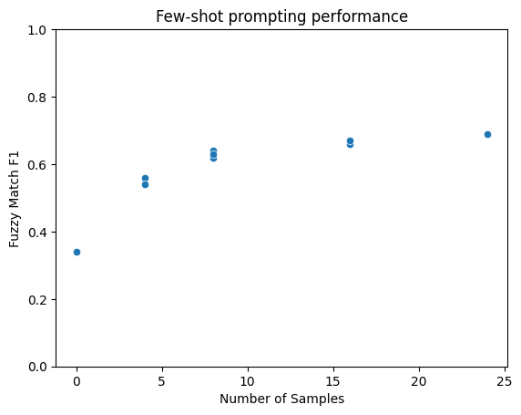

Problem
Large Language Models (LLMs) have become incredibly powerful, but they often need adaptation to perform specific tasks effectively. While fine-tuning model weights was traditionally the default approach, the massive size of modern LLMs makes it less practical. With LLMs’ strong general capabilities, prompt engineering has become a preferred method for adaptation. But how do these approaches compare in practice?
This post explores this question through a case study on joint entity-relation extraction, a fundamental NLP task used in constructing knowledge graphs. The task involves identifying both entities and their relationships from unstructured text.
Consider the following input text:
“Buzz Aldrin was born in Glen Ridge, New Jersey on January 20th, 1930.”
The extracted triples could be:
Buzz Aldrin | birth place | Glen Ridge, New Jersey
Buzz Aldrin | birth date | January 20th, 1930
Method and Experimental Setup
For the analysis, the WebNLG dataset was used, where each example consists of a natural language text and its corresponding entity-relation triples. The dataset was preprocessed by converting relations to plain English (e.g., “birthPlace” to “birth place”) and randomly concatenated 1–7 samples to create texts of varying lengths. This approach was intended to simulate real-world documents where context and content vary in length and complexity. However, it is acknowledged that this method may not fully capture the natural coherence and structural characteristics of actual documents. A conversation format version with user-assistant message pairs was also created for fine-tuning. The preprocessed dataset is available on Hugging Face. The train split was used for model adaptation and the dev split for benchmarking.
Experiments were conducted using Llama-3 8B, comparing fine-tuning and prompting approaches.
For fine-tuning, LoRA (Hu et al. 2021) with rank 64 was used to efficiently adapt the model weights using varying amounts of training data (100 to 8,870 examples). The configuration included:
Learning rate: 1.0e-4
Batch size: 8
Training epochs: 1
Scheduler: cosine with 0.1 warmup ratio
Mixed precision: bf16
For prompt optimization, the DSPy library (Khattab et al. 2024) was used to optimize prompts with different numbers of few-shot examples (0 to 24). All experiments used greedy decoding (temperature=0.0) to maintain consistency and reproducibility.
Performance was evaluated using three key metrics:
Exact Match F1: This measures the model’s ability to extract triples that exactly match the ground truth, considering both precision and recall.
Fuzzy Match F1: This more lenient metric allows for minor variations in entity boundaries and relation phrases while still capturing the core semantic relationships.
Pairwise Comparisons: Qwen-2.5-32B was employed as a judge to directly compare outputs from different models. For each test example, the judge was presented with:
- The input text
- Two competing model outputs (triples, with randomized order to eliminate position bias)
- A rubric emphasizing factual correctness, completeness, and precision
The judge was instructed to evaluate the triples based on key criteria including completeness of relationship extraction, factual accuracy, strict alignment with source text, precision without overgeneration, absence of redundancy, and informative representation. For each comparison, the judge provided a concise explanation of its reasoning before making a final decision of A, B, or DRAW. These decisions were then aggregated into ELO ratings, providing a more nuanced evaluation of output quality beyond string matching. This comparison was applied to 100 samples randomly chosen from the dev split.
Results
The evaluation used both traditional metrics (F1 scores) and pairwise comparisons judged by another LLM. Here are the key results:
Table 1: Comparison of fine-tuning and prompting approaches across different metrics.
| Adaptation Method | Num of Samples | Optimizer | Exact F1 | Fuzzy F1 | ELO Rating |
|---|---|---|---|---|---|
| Fine-tuning | 8,870 | AdamW | 0.94 | 0.98 | 1502.4 |
| Fine-tuning | 1,000 | AdamW | 0.81 | 0.93 | 1506.5 |
| Fine-tuning | 100 | AdamW | 0.62 | 0.84 | 1448.4 |
| Prompting | 24 | BFSRS-High | 0.32 | 0.69 | 1507.8 |
| Prompting | 8 | MIPROv2-Medium | 0.24 | 0.63 | 1510.6 |
| Prompting | 0 | None | 0.02 | 0.34 | 1472.4 |

Figure 1: The relationship between F1 scores and number of few-shot examples.
The plot demonstrates that F1 scores initially improve rapidly with additional few-shot examples but begin to plateau after around 16 examples. This saturation effect suggests there may be limited benefit to including more than 16 examples in the prompt, as the marginal gains diminish.
Analysis of these results reveals several key patterns:
- Fine-tuning demonstrates strong but nuanced performance:
- Performance scales clearly with data, improving from 0.62 to 0.94 Exact F1 score as shown in Table 1
- The full dataset (8,870 examples) achieves the best F1 results
- Even with limited data (100 examples), the model produces reasonable results
- Interestingly, using 1,000 examples led to higher ELO ratings than using 8,870 examples, suggesting possible overfitting with the full dataset
- This indicates that beyond a certain point, additional training data may lead to diminishing returns
- Prompt optimization demonstrates remarkable efficiency:
- Using MIPROv2-Medium with just 8 examples achieved the highest ELO rating (1510.6) despite lower F1 scores
- F1 scores improve rapidly with additional examples but plateau around 16 examples
- These results indicate that prompt optimization may be more sample-efficient for achieving real-world quality
- The approach requires significantly less computational resources compared to fine-tuning
- Zero-shot prompting underscores adaptation importance:
- Without any examples, performance is poor (0.02 Exact F1, 0.34 Fuzzy F1)
- Zero-shot approach yields the lowest performance across all metrics (ELO rating 1472.4)
- Adding even a few examples leads to dramatic improvements, as illustrated in Figure 1
- This clearly demonstrates that task-specific guidance is crucial for effective performance
Understanding Metric Discrepancy
The gap between classical metrics (F1 scores) and ELO ratings reveals important insights about evaluation:
- Classical metrics like F1 scores measure exact matching against ground truth, which may be overly strict:
- Minor variations in phrasing that preserve meaning are penalized
- Alternative but valid entity boundaries may reduce scores
- Semantically equivalent relationships expressed differently lower F1 scores
- ELO ratings from the judge model capture more nuanced aspects:
- Factual correctness and alignment with source text
- Completeness of relationship extraction
- Precision without redundancy or overgeneration
- Overall quality and usefulness of the extracted information
This explains why prompt optimization can achieve high ELO ratings despite lower F1 scores - it may produce high-quality outputs that differ slightly from the exact ground truth format.
Practical Implementation Considerations
The choice between fine-tuning and prompt optimization involves several trade-offs:
- Computational Resources:
- Fine-tuning requires significant compute for training
- Prompt optimization needs only inference resources
- Storage requirements differ substantially
- Deployment Flexibility:
- Prompts can be modified quickly in production
- Fine-tuned models require full redeployment
- Iteration speed varies significantly
- Data Requirements:
- Fine-tuning needs large datasets for best results
- Prompt optimization works well with limited examples
- Data collection and preparation costs differ
- Maintenance:
- Prompts are easier to version control and update
- Fine-tuned models require careful weight management
- Debugging complexity varies between approaches
Limitations and Future Work
The analysis has several limitations that point to interesting future directions:
- Judge LLM Constraints:
- A 32B parameter model was used for pairwise comparisons. Using larger models like Llama-70B or GPT-4o could provide more reliable judgments.
- The evaluation prompt could be further optimized. For instance, self-consistency prompting (Wang, Xuezhi et al. 2022) could be employed to improve the quality of the judge LLM.
- Task and Dataset Coverage:
- Results are specific to entity-relation extraction. Testing on other NLP tasks (classification, Q&A) would provide broader insights.
- Additional datasets would help validate findings.
- Statistical Significance of Results:
- The differences in ELO ratings and F1 scores across configurations are relatively small.
- Future work should include statistical significance testing to determine if these differences are meaningful.
Conclusion
While fine-tuning achieves higher F1 scores, prompt optimization can be surprisingly effective when properly implemented. The choice between these approaches depends on specific constraints and requirements:
- If sufficient training data and computational resources are available, fine-tuning provides robust performance
- If data or compute is limited, optimized prompting can offer a viable alternative
- When rapid iteration or deployment flexibility is crucial, prompt optimization has clear advantages
- In cases where exact matching is critical, fine-tuning may be preferable
Note:
The gap between traditional metrics and LLM-based evaluation suggests that while quantitative scores provide one perspective, qualitative assessment might be necessary to understanding real-world performance.
The code for the experiments and analysis is available at this GitHub repository.
References
- Khattab, Omar and Singhvi, Arnav and Maheshwari, Paridhi and Zhang, Zhiyuan and Santhanam, Keshav and Vardhamanan, Sri and Haq, Saiful and Sharma, Ashutosh and Joshi, Thomas T. and Moazam, Hanna and Miller, Heather and Zaharia, Matei and Potts, Christopher. (2024). DSPy: Compiling Declarative Language Model Calls into Self-Improving Pipelines. In The Twelfth International Conference on Learning Representations.
- WebNLG
- Llama-3 8B
- Qwen-2.5-32B
- Hu, J.E., Shen, Y., Wallis, P., Allen-Zhu, Z., Li, Y., Wang, S., & Chen, W. (2021). LoRA: Low-Rank Adaptation of Large Language Models. ArXiv, abs/2106.09685.
- Wang, X., Wei, J., Schuurmans, D., Le, Q., Chi, E.H., & Zhou, D. (2022). Self-Consistency Improves Chain of Thought Reasoning in Language Models. ArXiv, abs/2203.11171.
Appendix
Example Comparisons
To further illustrate the differences between fine-tuning and prompt optimization, I present a few selected examples from my model comparison, where A and B denote best performing fine-tuned and prompt optimized models respectively:
Example 1: Decision was A
Text:
Cornell University is in Ithaca, New York and their nickname is Cornell Big Red. They are the publisher of Administrative Science Quarterly and are affiliated with the Association of American Universities.
Triples A:
- “Administrative Science Quarterly | publisher | Cornell University” - “Cornell University | nickname | Cornell Big Red” - “Cornell University | affiliation | Association of American Universities” - “Cornell University | city | Ithaca, New York”
Triples B:
- “Cornell University | city | Ithaca, New York” - “Cornell University | nickname | Cornell Big Red” - “Cornell University | academic publisher | Administrative Science Quarterly” - “Cornell University | affiliation | Association of American Universities”
Explanation:
Set A correctly identifies ‘Cornell University’ as the publisher of ‘Administrative Science Quarterly’, whereas Set B incorrectly reverses this relationship. Therefore, Set A is more correct and complete.
Example 2: Decision was B
Text:
Alpena County Regional Airport runway name is 1/19. Swords is a part of the Dublin European Parliamentary constituency. The United States (with a leader, John Roberts) boasts the Bacon Explosion. American Abraham A. Ribicoff was born in New Britain, Connecticut and is married to Ruth Ribicoff. One of the ethnic groups in the U.S. are Native Americans. Georgia is in the country of United States. Atlanta; has a total area of 347.1 square kilometres, a population density of 1299.0 inhabitants per square kilometre, and the area codes: 404, 678, and 470. The birthplace of Alfred Garth Jones is Manchester, (part of Greater Manchester), England. In Manchester the Labour Party is in the majority.
Triples A:
- “Alpena County Regional Airport | runway name | 1/19” - “Swords, Dublin | is part of | Dublin (European Parliament constituency)” - “Bacon Explosion | country | United States” - “United States | leader | John Roberts” - “Abraham A. Ribicoff | birth place | New Britain, Connecticut” - “Abraham A. Ribicoff | spouse | Ruth Ribicoff” - “United States | ethnic group | Native Americans in the United States” - “Abraham A. Ribicoff | nationality | American” - “Georgia (U.S. state) | country | United States” - “Atlanta | area code | 404, 678, 470” - “Atlanta | population density | 1299.0 (inhabitants per square kilometre)” - “Atlanta | area total | 347.1 (square kilometres)” - “Alfred Garth Jones | birth place | England” - “Alfred Garth Jones | birth place | Manchester” - “Manchester | is part of | Greater Manchester” - “Manchester | leader | Labour Party (UK)”
Triples B:
- “Alpena County Regional Airport | runway name | 1/19” - “Swords | is part of | Dublin (European Parliament constituency)” - “United States | leader | John Roberts” - “United States | dish variation | Bacon Explosion” - “Abraham A. Ribicoff | spouse | Ruth Ribicoff” - “Abraham A. Ribicoff | birth place | New Britain, Connecticut” - “United States | ethnic group | Native Americans in the United States” - “Georgia (U.S. state) | country | United States” - “Atlanta | area code | 404, 678, 470” - “Atlanta | population density | 1299.0 (inhabitants per square kilometre)” - “Atlanta | total area | 347.1 (square kilometres)” - “Alfred Garth Jones | birth place | Manchester, England” - “Manchester | has to its majority | Labour Party” - “Manchester | is part of | Greater Manchester”
Explanation:
Model B’s triples are complete, correct, and consistent with the text. It correctly states the birth place of Alfred Garth Jones as ‘Manchester, England’ and avoids the duplication issue. Therefore, Model B’s triples are better.
Example 3: Decision was DRAW
Text:
The ISBN number of A Long Long Way is 0-670-03380-4.
Triples A:
- “A Long Long Way | isbn number | 0-670-03380-4”
Triples B:
- “A Long Long Way | isbn number | 0-670-03380-4”
Explanation:
Both model A and model B extract the same triple, which is complete, correct, consistent with the text, and does not contain duplicates. Therefore, both models perform equally well.